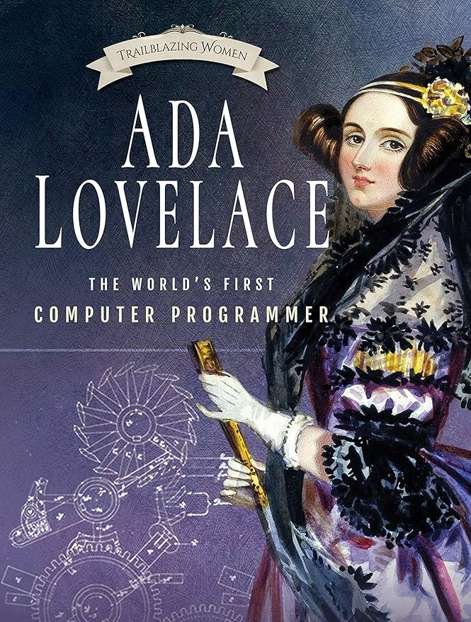

Who was She?
— Ada Lovelace was a brilliant mathematician who is considered the First Computer Programmer. She worked with Charles Babbage on the Analytical Engine.
The OG of Programming
|  |
— Ada Lovelace was a brilliant mathematician who is considered the First Computer Programmer. She worked with Charles Babbage on the Analytical Engine.